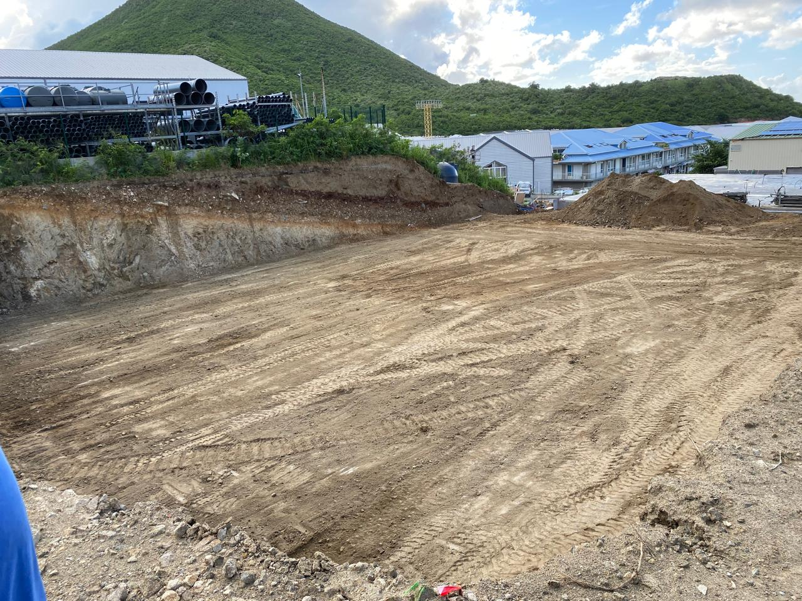
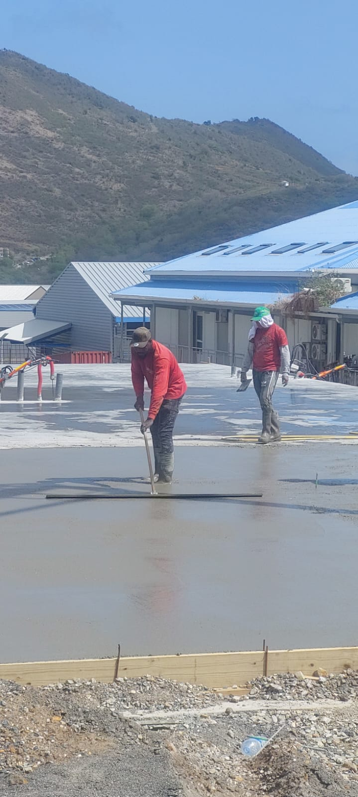
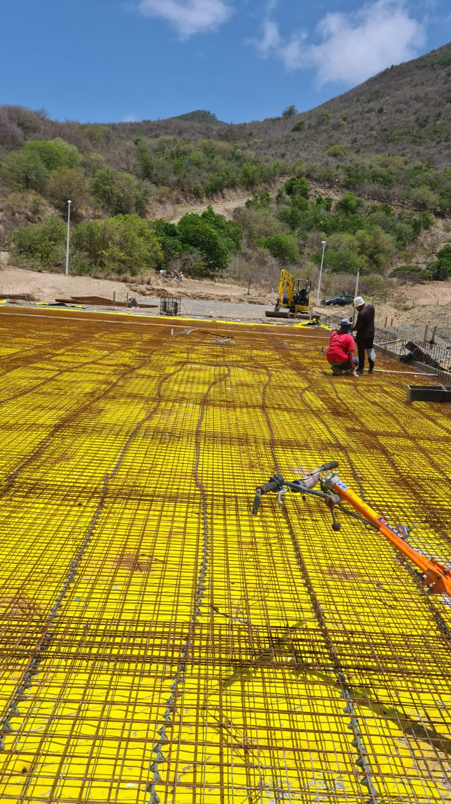
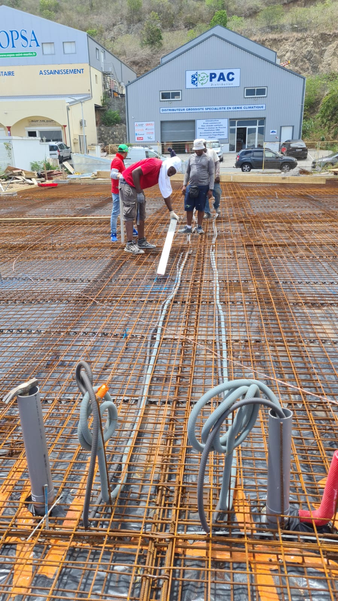
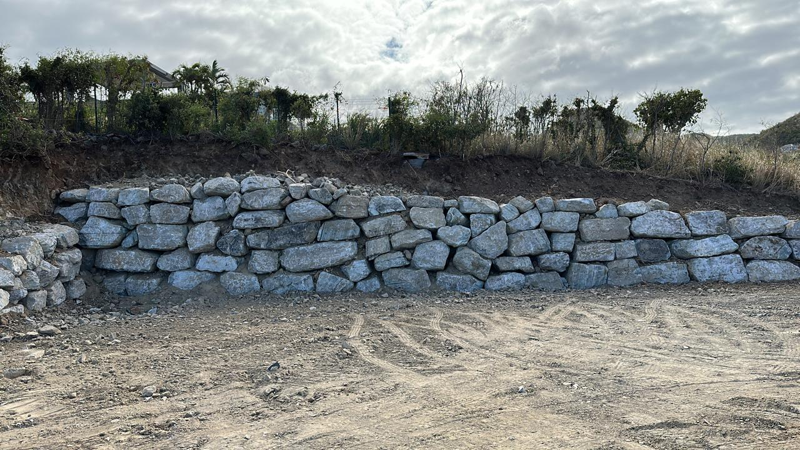

Chantier de terrassement — Quartier du Colombier
Vue aérienne d'un grand chantier de terrassement sur flanc de colline. Pelle mécanique et compacteur en action, avec la ville de Saint-Martin en contrebas.
Dix années de chantiers sur l'île. Lotissements, villas, hôtels, voiries, réseaux, plateformes — chaque réalisation est la preuve de notre engagement envers la qualité d'exécution et la satisfaction de nos clients à Saint-Martin et Sint Maarten.
Vue aérienne d'un grand chantier de terrassement sur flanc de colline. Pelle mécanique et compacteur en action, avec la ville de Saint-Martin en contrebas.

Terrassement et nivellement d'une vaste plateforme en surplomb d'un quartier résidentiel. Compactage en couches successives vue depuis les hauteurs de l'île.

Compactage de plateforme de voirie en bordure de lagon. Compacteur CAT tandem et pelle mécanique orange en soutien. Vue imprenable sur Simpson Bay.

Terrassement en terrain rocheux volcanique avec pelle mécanique Hitachi orange. Extraction et évacuation des roches sur terrain accidenté.

Terrassement et création d'une plateforme industrielle plane. Fouilles en déblai, mise à la cote, compactage. Stockage de canalisations HDPE sur site.

Terrassement en déblai et réalisation d'un mur de soutènement en gabions pour sécuriser la plateforme d'une villa de standing. Vue sur les résidences environnantes.

Finissage et lissage d'une dalle béton armé de grande surface avec treillis soudé. Travail soigné des équipes Geotech Caraïbes pour une planéité parfaite.

Coulage et finissage d'une dalle béton armé sur plateforme commerciale. Équipe de trois finisseurs à l'œuvre, treillis soudé en premier plan.

Pose du treillis soudé avant coulage du béton sur une plateforme de grande surface. Vue sur le flanc de colline verdoyant de l'île.

Terrassement et préparation de terrain pour projet immobilier résidentiel. Décapage, fouilles et réglage de la plateforme aux cotes projet.

Viabilisation complète d'un lotissement résidentiel : terrassement, réseaux EU/EP, alimentation eau potable, réseaux secs, voirie interne.

Chantier de travaux publics sur Saint-Martin : terrassement, réseaux enterrés, voirie interne. Intervention multi-corps d'état avec coordination Geotech Caraïbes.
Contactez Geotech Caraïbes pour discuter de votre projet de terrassement, VRD, plateforme ou réseaux à Saint-Martin. Devis gratuit, réponse rapide.